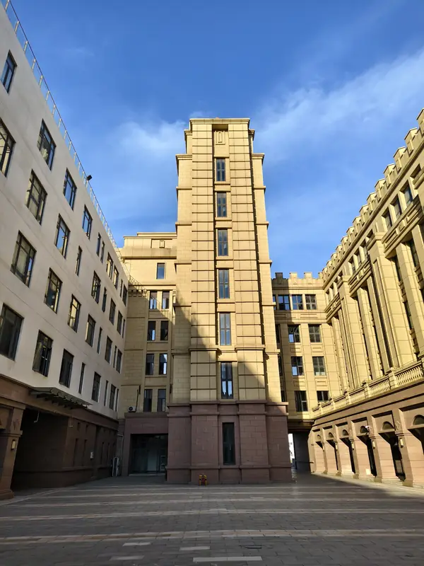

报到证件先装一个文件袋
录取通知书、身份证及复印件、档案、团员或党籍材料、证件照建议集中收纳，到校当天不用翻箱。
看报到指南 →从行李装包到宿舍门牌号，小北学长把每一步都排好了顺序。你不用再猜，也不用在群里反复问同一句话。
攻略由学长整理，仅供参考。报到时间、收费、住宿、军训等政策信息，请以学校官方通知为准。
学费、住宿费等项目以录取通知书和缴费通知为准；建议按通知书要求线上缴费，报到会快很多。
在迎新点提交录取通知书，按现场工作人员指引依次办理。
宿舍按现场分配，不同楼栋配置可能不同；入住后先确认本楼栋的门禁与用电规则。
把注册单交回迎新点，完成学院登记。
现场如有调整，按迎新点和工作人员指引办理。
这是最常见的一套流程，全部 9 个站点的完整攻略在攻略站点。
点一行，直接进那一站看完整内容。行尾的编号就是顺序，也是页面里的锚点。
装包 / 材料 / 容易忽略的细节
路线 / 材料 / 现场流程
宿舍 / 军训 / 食堂
选课 / 社团 / 图书馆
四张实景照片。到校之前先看一眼，进校门会熟一点。

照片为校园实景，拍摄角度和天气不同，现场会有些差异。